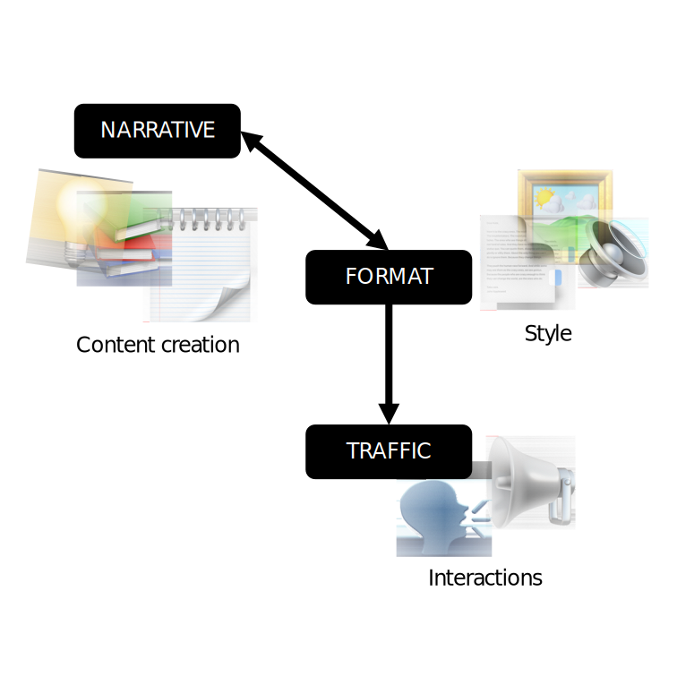
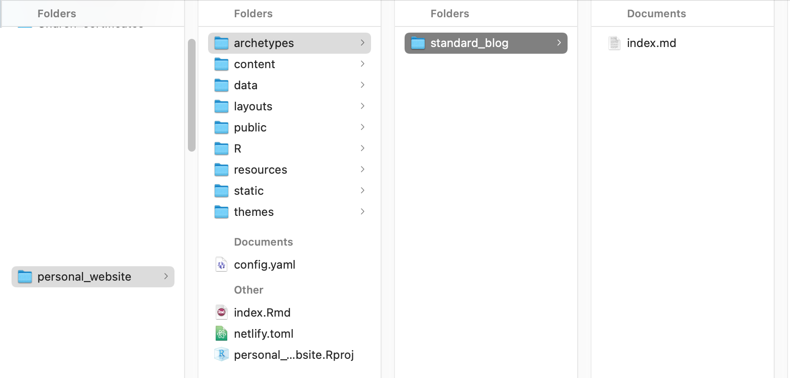

Website content creation nugget 1
By Maria Sevillano
July 1, 2021
TL;DR: The objective of this post is to reflect on how we write and to set up a template to reuse in future blog posts.
Tips for blog post writing
Writing research papers is not the same as writing academic blogs. The former is more prescriptive, limited to a number of characters, and usually constrained to 4-5 figures and tables (sure, we can go crazy in the supplementary material, but there’s a reason why it’s supplementary … ). In contrast, blog posting gives you freedom to develop content in a more “artistic” manner. Nevertheless, there are three key things to keep an eye out before, during and after you start writing a blog post.

- NARRATIVE
Chose the right topic and write with honesty and clarity.
Your content should be data driven and well researched.
Intersect your interests with the interest of your audience.
Create a road map.
Set clear objectives to make the writing experience more amenable.
It will also make it easier for readers to follow along
Show passion through your writing.
- If you are excited to write it -and follow through, chances are your audience will keep on reading.
Set expectations.
Express your point of view, provide conclusions, solutions or actionable tasks.
Ask not what writing about the topic is doing for you, but what will the reader take from it.
- FORMAT
Determine what is the most effective way to convey your ideas.
Is long paragraph or bullet points better?
Mixing in media can be an improvement over long descriptions. Think infographics, audio, interactive content, and GIFs.
Please proofread.
It might not seem like a big deal, but too many typos are distracting and it just looks sloppy.
This doesn’t have to be an isolated task. Enlist a few friends to run through it, before posting it.
- TRAFFIC
Craft an attractive blog post title.
A simple to understand, well thought out title will get you noticed. Refrain from using exaggerated and shocking titles, don’t become clickbait.
Make use of key terms that will give you visibility (i.e. search engine optimization).
How to and list titles are very popular. For example,
How to improve productivity with 3 simple steps
10 things you can do to improve productivity
Promote your writing.
Don’t just write for your self, share your blog post with the world!
Highlight your recent post in your website, twitter, and slack groups.
Here’s a couple of blogs I ❤️:
In general, I’ll keep my post informal and tutorial-esque and will worry less about the traffic aspects highlighted above.
Setting up expectations
Why am I writing blogposts?
Communication
- Write succinctly about a topic. Getting my point across quickly and effectively is an important skill that keeps audiences engaged, be it in written or verbal communication.
Documentation
- Notes for my future self. Generating a document that I can look back on to remember what I did, but most importantly, why I did it.
Education
- Laying the groundwork. By documenting my experiences, I will showcase tools and techniques that others can apply to their work, as well as common mistakes and how to avoid them.
Sharing
- Highlight interesting things. Feature something I’ve done recently or I think its useful and I’m excited about it.
I’ve been doing this throughout my PhD, but usually not on an open forum.
What can you do now?
Start writing! Right… But… that takes time.
Here’s something you can do in the next 5 minutes that will save you some time later on.
In general, I use a template Rmarkdown file with the following headings:
Aim, Scope, Background, Libraries, Data wrangling, Analyses, and Plots.
This provides me with structure to produce a report with minimal information needed to be comprehensive, it’s my go to mad-lib. This works perfectly for standalone html files produced by Rmarkdown. However, if you are using the blogdown package to populate your webpage, the creation of this template is a bit different.
So, how do we set a template that blogdown can use to create a new post?
First, let’s learn about archetypes in hugo themes. In a previous post I mentioned how Hugo fits into the blogdown package. Posts in a Hugo webpage are defined within a folder structure that contain the attributes to make the site look “right”. Archetypes are templates that will automatically create that folder structure, populate the front matter and generate that mad-lib style (that can even contain dummy images) to get us started.
Note: Front matter is metadata associated to the content, not the content itself. It appears at the top of the markdown file and it’s key value pair information written in YAML, TOML, or JSON.
On the website home directory start an
archetypesfolder. As always don’t use spaces to name anything!
Within this folder create another folder and name it such that you can have an idea of the type of template it will generate.
Create a markdown file named
index.mdcontaining the front matter and body you will like to generate every time.The line of code you will need to call to generate content with that format is
blogdown::new_post(title = "Content creation nugget 1",
ext = '.Rmd',
subdir = "blog",
kind = "standard_blog/")Notice that kind corresponds to the name of the folder containing your index.
This can get a bit boring and may not be what you need for a specific type of post. My advice is to create multiple archetypes to fit your needs.
That‚Äôs it! Now you have a reusable outline to speed up your writing. üéâ
- Posted on:
- July 1, 2021
- Length:
- 5 minute read, 922 words
- See Also: